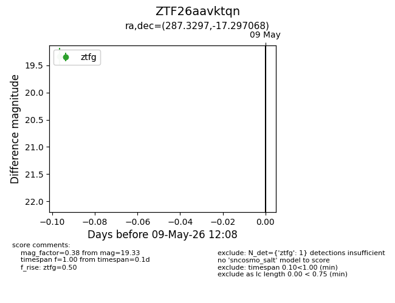
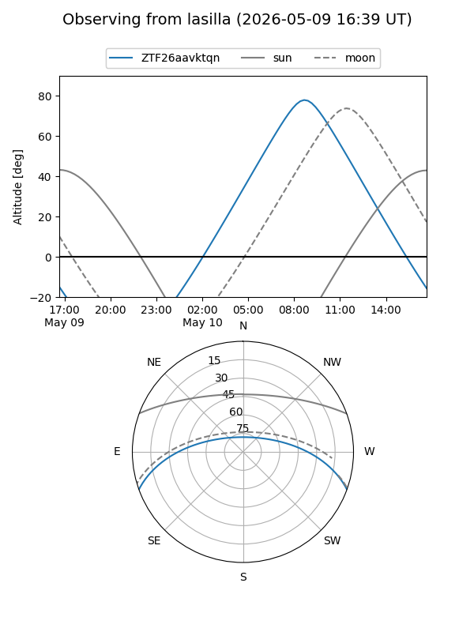
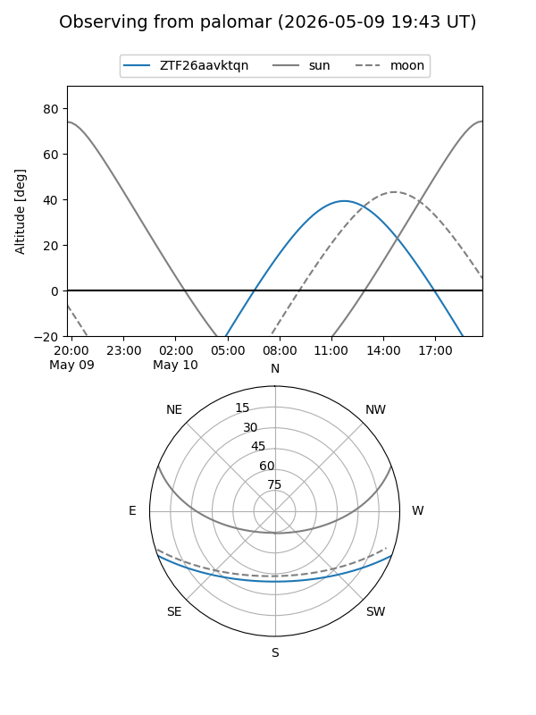

ZTF26aavktqn
Target ZTF26aavktqn at 2026-05-09 12:09
Aliases and brokers:
FINK: link
Lasair: link
ALeRCE: link
alt names
ZTF26aavktqn (ztf,fink_ztf)
Coordinates:
equatorial (ra, dec) = 287.3297,-17.29707
equatorial (HMS+DMS) = 19:09:19.14,-17:17:49.44
galactic (l, b) = (19.3091,-11.64258)
Flags:
Photometry:
last ztfg=19.33
1 ztfg detections
Lightcurve

Visibility


Additional plots